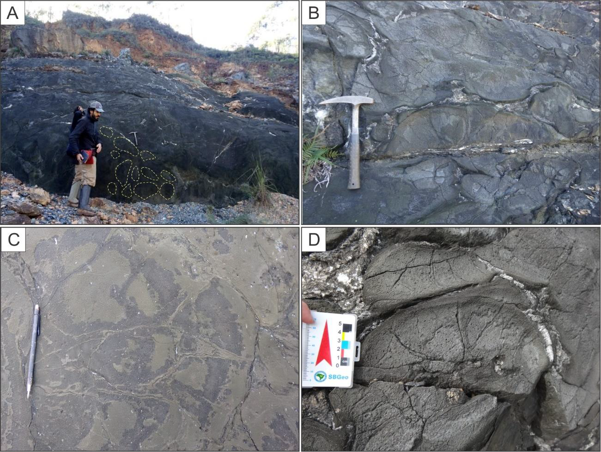

Komatiite Lavas from The Quebra Osso Group (Rio das Velhas Greenstone Belt, Southeast Brazil): A Field Guide to An Archean Flow Field

Resumo em Português
O Grupo Quebra Osso engloba um dos fluxos de komatiito Arqueanos mais bem preservados da região do Quadrilátero Ferrífero, no sul do Cráton São Francisco (Brasil). É comumente associado à base do greenstone belt Rio das Velhas, dentro do bloco tectonoestratigráfico Santa Bárbara. As rochas do Quebra Osso estão bem expostas ao longo do vale do rio homônimo, próximo à cidade de Catas Altas (Minas Gerais), e em antigas pedreiras de serpentinito.Neste guia de campo, apresentamos as descrições dos principais afloramentos da área, incluindo uma variedade de fluxos de komatiito, rochas sedimentares e rochas piroclásticas. Apesar da alteração pervasiva das assembleias minerais primárias devido ao metamorfismo de fácies xisto-verde a anfibolito, as rochas ultramáficas exibem diversas texturas e estruturas ígneas. As texturas vulcânicas são reconhecíveis pela morfologia da olivina e do piroxênio ígneo originais, que sofreram pseudomorfização por minerais hidratados — serpentina e clorita. Essas feições incluem as distintivas texturas spinifex e cumuláticas, que fornecem indícios das condições operantes durante o posicionamento e a cristalização dos líquidos ultrabásicos.A predominância de espessos pacotes de fluxos maciços sugere fluxos de lava canalizados, com subordinados fluxos marginais finos laminados (com textura spinifex), almofadados, brechados e piroclásticos. Brechas vulcânicas, lavas almofadadas e rochas sedimentares químicas indicam que essas rochas erupcionaram subaquaticamente. Esses múltiplos produtos vulcânicos caracterizam um campo de fluxos de komatiito único, e sua notável preservação distingue o Grupo Quebra Osso das demais associações ultramáficas do Cráton São Francisco.